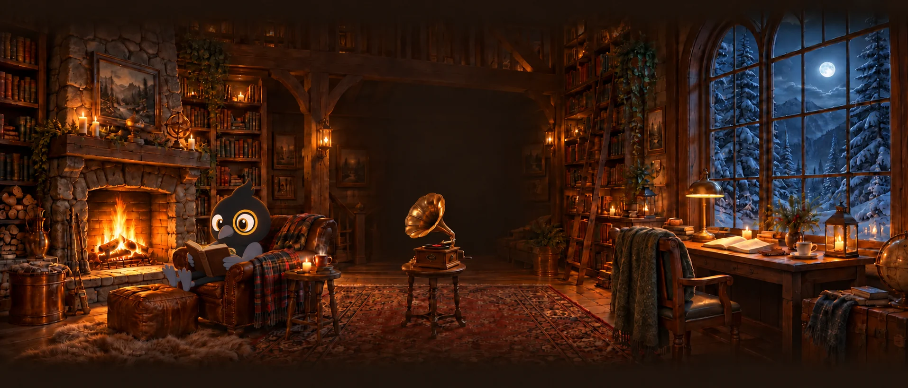
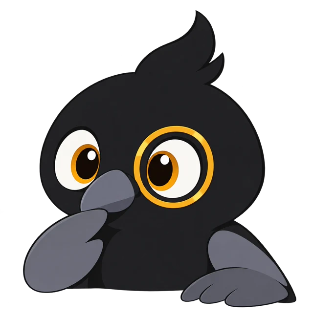
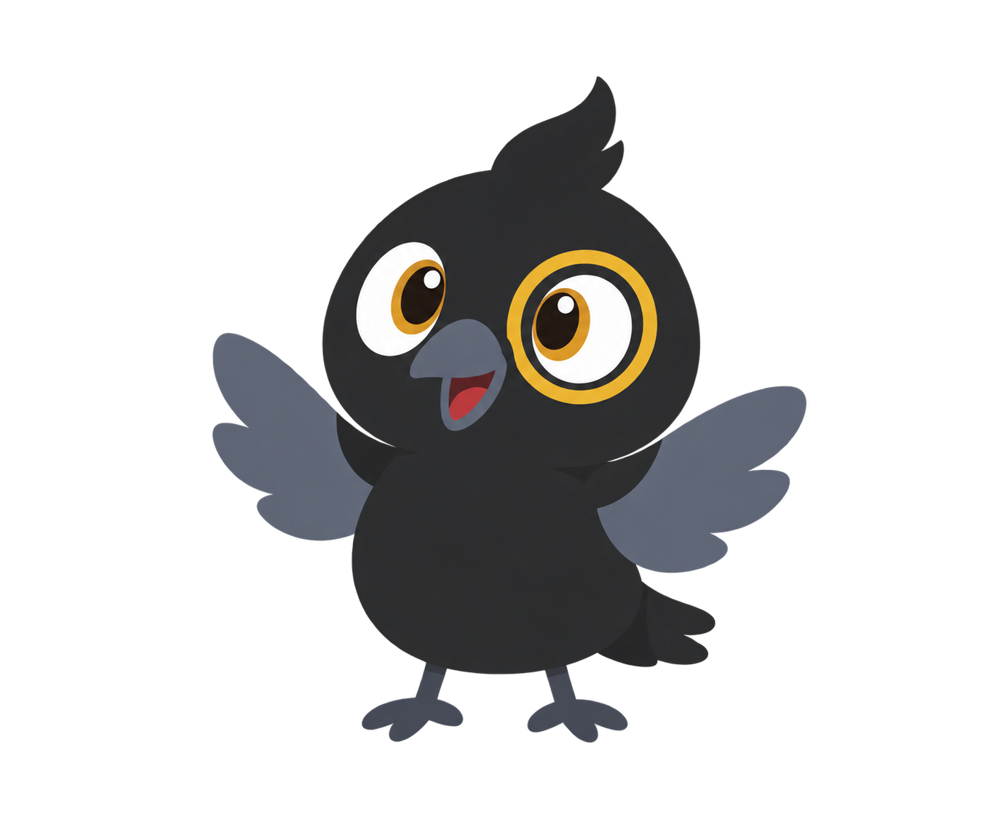
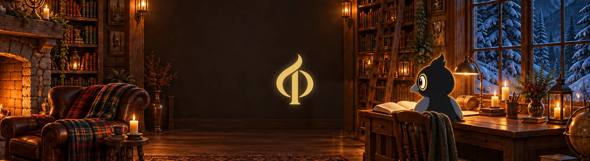
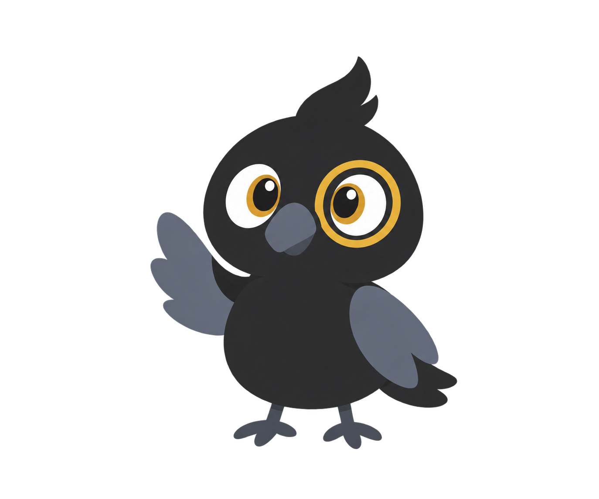

Felsefe araştırmacısı
Karahan Uçar
Varlığı, zihni, bilgiyi ve dili düşünmeye çalışıyorum; bu sayfa yayınlarımı, sunumlarımı ve bilgi notlarımı bir araya getiriyor.

Hakkında
İstanbul Üniversitesi’nde felsefe lisansımı tamamladım; şimdi İstanbul Üniversitesi ve Ruhr-Universität Bochum’da yüksek lisans yapıyorum. Metafizik, zihin felsefesi, epistemoloji ve dil felsefesiyle ilgileniyorum; özellikle varlık felsefesinde soyut ve olmayan nesneler üzerine çalışıyorum. Bu sitede yayınlarımı, sunumlarımı ve bilgi notlarımı paylaşıyorum.taslak
- 2020 – 2024
Lisans, İstanbul Üniversitesi - 2024 – sürüyor
Yüksek lisans, İstanbul Üniversitesi ve Ruhr-Universität Bochum

Bilgi içerikleri
Alan alan düzenlenmiş notlar ve kaynak listeleri.taslak
Her raf bir alan. Pirinç levhaya dokununca alanın odası, kitaba dokununca o dalın dünyası açılır; parıldayan kitapların kendi sahnesi var.
6 alan · 0 oda · 0 harita · 0 terim
Son eklenenler
Bu rafta henüz içerik yok; yakında eklenecek.
Yayınlar
Makaleler, bildiriler, sunum metinleri ve diğer belgeler. Bir başlığa dokununca açıklaması ve indirme bağlantısı açılır.taslak
Kanal
“Düşüncenin Eşiğinde” — merak, akıl, anlam. Konu anlatımları ve videolar; seçtiğin video aşağıdaki ekranda oynar.taslak


Şimdi seçili
YouTube’da aç ↗Son yüklenenler
Randevu
Görüşme, danışma ya da sohbet için ücretsiz randevu. Uygun saatleri Google Takvim sayfasından seçebilirsin.
İletişim
Akademik profillerim ve sosyal hesaplarım. Görüşmek için yukarıdaki randevu bağlantısını kullanabilirsin.

Dil
Sayfayı okumak istediğin dili seç.